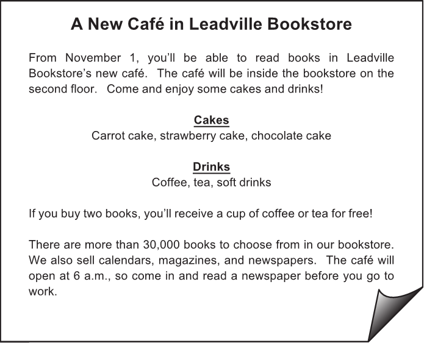
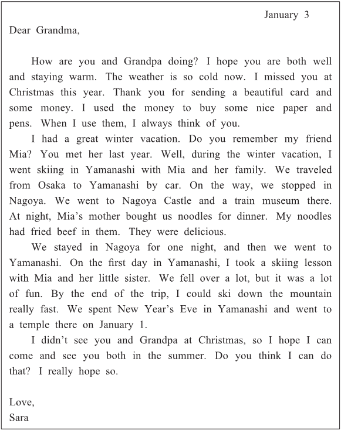
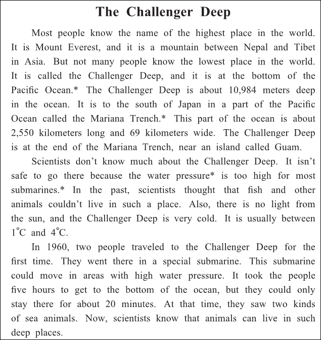
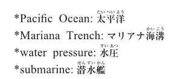

英語検定 ３級(2022年第2回No.3) 残り時間が0になると、自動的に採点します。 時間内に終了する場合は、一番下の「採点する」のボタンを押してください。 残り時間： 分 秒 No 英語検定３級筆記(2022年第2回) 3A 次の掲示の内容に関して、(21)と(22)の質問に対する答えとして 最も適切なもの、または文を完成させるのに最も適切なものを、 解答欄の1～4の中から一つ選びなさい。  No21 What is this notice about? 1 A bookstore that will close on November 1. 2 A café that will open inside a bookstore. 3 A book written by the owner of a café. 4 A magazine with many recipes. 答え： 1 2 3 4 No22 People who buy two books will get 1 or 2 or 3 or 4 1 a free magazine. 2 a free newspaper. 3 a free cake. 4 a free drink. 答え： 1 2 3 4 3B 次の手紙文の内容に関して、(23)から(25)までの質問に対する答えとして最も適切なもの、 または文を完成させるのに最も適切なものを、解答欄の1～4の中から一つ選びなさい。  No23 How did Sara use the money from her grandparents? 1 To go on vacation. 2 To buy a Christmas cake. 3 To buy some paper and pens. 4 To get a present for her friend. 答え： 1 2 3 4 No24 What did Sara do in Yamanashi? 1 She went to a castle. 2 She went skiing. 3 She ate noodles. 4 She went to a museum. 答え： 1 2 3 4 No25 What does Sara want to do in the summer? 1 Visit her grandparents. 2 Go to a temple. 3 Get a part-time job. 4 Go back t oYamanashi. 答え： 1 2 3 4 3C 次の英文の内容に関して、(26)から(30)までの質問に対する答えとして最も適切なもの、 または文を完成させるのに最も適切なものを、解答欄の1～4の中から一つ選びなさい。   No26 Where is the Mariana Trench? 1 In the Pacific Ocean. 2 On the island of Guam. 3 Between Nepal and Tibet. 4 At the bottom of a lake in Japan. 答え： 1 2 3 4 No27 How wide is the Mariana Trench? 1 About 2,550 meters. 2 About 10,984 meters. 3 About 20 kilometers. 4 About 69 kilometers. 答え： 1 2 3 4 No28 Why is the Challenger Deep dangerous for people? 1 The water pressure is very high. 2 Dangerous animals and fish live there. 3 The lights are too bright for their eyes. 4 The water is too hot for them. 答え： 1 2 3 4 No29 In 1960, two people 1 or 2 or 3 or 4 1 lost a special submarine. 2 drew a map of the bottom of the ocean. 3 went to the Challenger Deep 4 found a mountain under the sea. 答え： 1 2 3 4 No30 What is this story about? 1 A dark and very deep place in the ocean. 2 The history of submarines. 3 A special and delicious kind of fish. 4 Places to go hiking in Asia. 答え： 1 2 3 4




 英語検定 ３級(2022年第2回No.3)
英語検定 ３級(2022年第2回No.3)